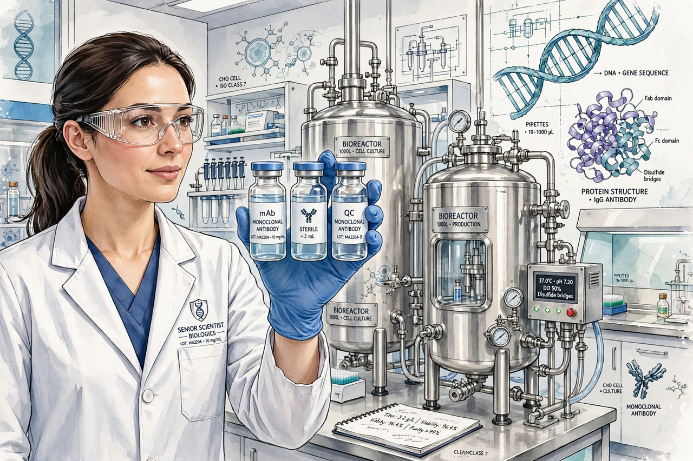

A biologic medical product, often shortened to biologic or biological, is any pharmaceutical drug product manufactured in, extracted from, or semi-synthesized from biological sources. Different from totally synthesized pharmaceuticals, they include vaccines, blood and blood components, allergenics, somatic cells, gene therapies, tissues, and recombinant therapeutic proteins. Biologics can be composed of sugars, proteins, nucleic acids, or complex combinations of these substances, or may be living cells or tissues.
| Biologic medical product | |
|---|---|
 | |
| Examples | Vaccines, insulin, monoclonal antibodies, gene therapies |
| Regulator (US) | FDA Center for Biologics Evaluation and Research (CBER) / CDER |
Biologics are usually large, complex molecules produced by living organisms — bacteria, yeast, or mammalian cells — and are heat-sensitive and susceptible to microbial contamination, requiring careful manufacture and cold-chain storage. Unlike conventional small-molecule drugs made by chemical synthesis, a biologic's structure and properties depend heavily on its manufacturing process ("the process is the product").
A biosimilar is a biologic that is highly similar to an approved reference product, with no clinically meaningful differences in safety or efficacy. Because biologics cannot be copied exactly, biosimilars are not identical generics; the EU created a biosimilar approval pathway in 2005, and the US followed with the Biologics Price Competition and Innovation Act of 2009.
In the United States, biologics are licensed under the Public Health Service Act by the Food and Drug Administration; most therapeutic biologics are reviewed by CDER, while vaccines, blood products, and cellular therapies fall under CBER. In the European Union they are authorised through the European Medicines Agency.
From Wikipedia, the free encyclopedia (recreated from memory).